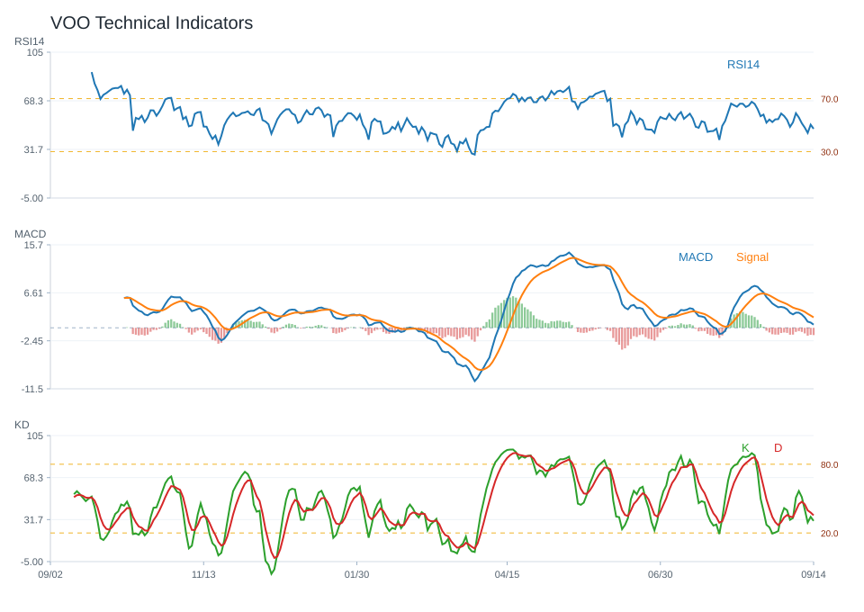

20 日
3.30%60 日
1.59%觀察等級
正向觀察市場資料
2026-08-20- 成交量8,434,949.00
- 20 日均線699.50
- 60 日均線690.37
- 200 日均線650.24
- 距 52 週高點-1.95%
- 距 52 週低點20.67%
技術指標
Python 計算- RSI1451.74
- MACD hist-0.51
- KD K/D27.17 / 49.41
- ADX20.04
- 布林上緣726.99
- 布林下緣672.00
量價與事件
規則式分析- 量價型態放量震盪
- 量價分數1
- 20 日量比1.42
- OBV 20 日變化10.14%
- 事件偏向事件偏多
- 事件分數5
研究訊號與觀察等級
不是買賣建議正向觀察；研究訊號 偏多，分數 4。
部分條件偏正向，可持續追蹤後續資料是否延續。
- 站上 20 日均線
- 站上 200 日均線
- RSI 位於中性偏強區
- MACD histogram 為負
- KD 偏弱
- 量價型態：放量震盪
- 量能放大但價格方向尚未明確
- OBV 20 日量壓偏正向
回測摘要
歷史資料研究| 策略 | CAGR | Sharpe | 最大回撤 | 勝率 | 交易次數 |
|---|---|---|---|---|---|
| 價格高於 200 日均線 | 13.25% | 1.23 | -10.35% | 56.59% | 5 |
| 20/60 日均線交叉 | 10.41% | 0.95 | -9.94% | 54.07% | 9 |
| 買進持有 | 17.93% | 1.12 | -18.69% | 55.41% | 1 |
圖表
價格 / 量價 / 技術 / 回測VOO 價格均線

VOO 量價關係

VOO 技術指標

VOO 回測